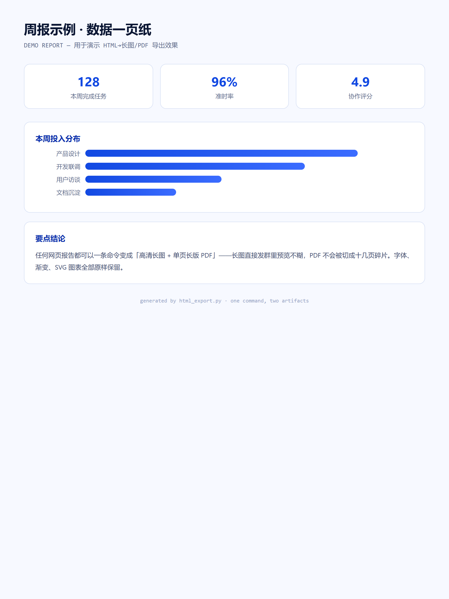

任何网页报告，一条命令变成「能直接发群的高清长图」+「不被切碎的单页长版 PDF」。
为什么做、怎么取舍、做完带来什么。
网页报告分享一直很别扭：发链接对方打不开，截屏太糊，浏览器打印 PDF 又被切成十几页碎片。我要的是"一条命令，直接拿到能发微信群的成品"。
单文件零配置；优先复用本机 Chrome/Edge 内核，绕开国内下载浏览器内核卡死的坑；PDF 按内容实际高度输出"单页长版"而非 A4 分页；只留 --dark / --width / --scale 三个参数，覆盖 95% 场景。
现在是我个人工作流的底层工具：旅游攻略、分析报告、数据周报全部一键出图；2 倍清晰度长图直接发群不糊，PDF 永远一页到底。
一条命令，两个成品。
下图就是用这个工具自己导出的演示报告长图。
